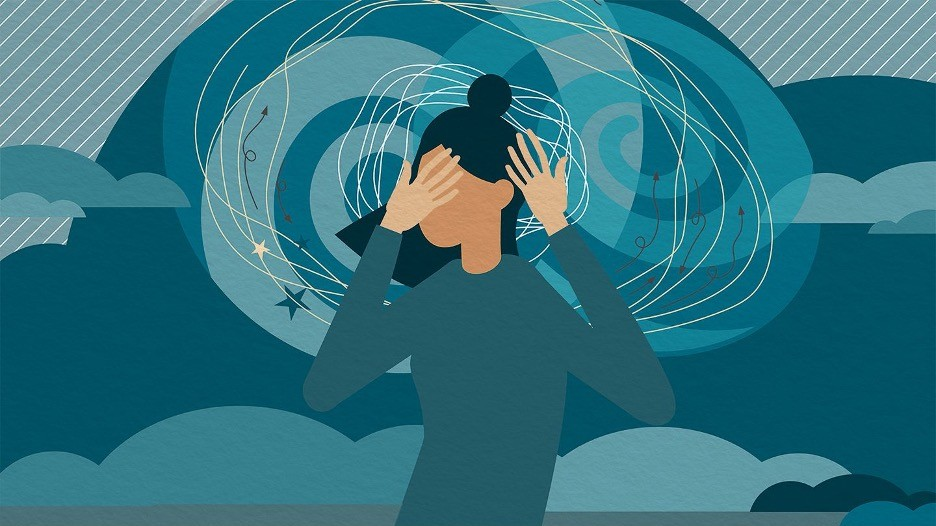
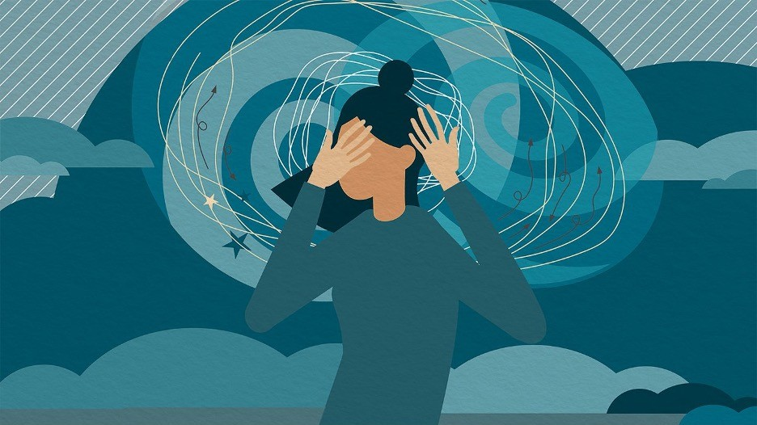

Apa itu PTSD?
PTSD adalah kondisi kesehatan mental yang muncul setelah seseorang mengalami atau menyaksikan peristiwa yang mengancam jiwa atau sangat menakutkan, seperti perang, bencana alam, atau serangan.

Opening Awareness & Supports Inner Strength
PTSD adalah kondisi kesehatan mental yang muncul setelah seseorang mengalami atau menyaksikan peristiwa yang mengancam jiwa atau sangat menakutkan, seperti perang, bencana alam, atau serangan.
Penderita PTSD Sering kali teringat pada peristiwa yang membuatnya trauma. Bahkan, penderita merasa seakan mengulang kembali kejadian tersebut. Ingatan terhadap peristiwa traumatis juga sering kali hadir dalam mimpi buruk sehingga penderita tertekan secara emosional.
Penderita PTSD enggan memikirkan atau membicarakan peristiwa yang membuatnya trauma. Oleh sebab itu, penderita akan menghindari tempat, aktivitas, dan seseorang yang terkait dengan kejadian traumatis tersebut.
Cenderung Penderita PTSD menyalahkan dirinya atau orang lain. Selain itu, penderita juga kehilangan minat pada aktivitas yang dulu disukainya dan merasa putus asa. Penderita juga lebih menyendiri dan sulit menjalin hubungan dengan orang lain.
Penderita PTSD sering kali mudah takut atau marah meskipun tidak
dipicu oleh ingatan pada peristiwa traumatis. Perubahan perilaku
ini kerap membahayakan dirinya atau orang lain. Penderita juga
sulit tidur dan berkonsentrasi.
Pada beberapa kasus, penderita PTSD juga dapat mengalami
alexithymia, yaitu ketidakmampuan untuk mengenali emosi pada
dirinya.
Dukungan dari teman, keluarga, dan kelompok pendukung (support group) untuk memberikan ruang aman I berbagi pengalaman dan perasaan. Support group terdiri dari orang-orang dengan pengalaman serupa yang saling memberi dukungan emosional, motivasi, dan strategi mengatasi masalah, sehingga mengurangi rasa kesepian dan meningkatkan kemampuan mengatasi tantangan.
Terapi psikologis seperti terapi perilaku kognitif membantu penderita mengubah pola pikir negatif akibat trauma menjadi lebih positif dan rasional. Dengan terapi ini, kemampuan menghadapi stres kecemasan meningkat, sehingga penderita mampu mengelola gejala PTSD secara lebih efektif.
Mengembangkan strategi coping seperti teknik relaksasi, meditasi, olahraga, dan aktivitas positif membantu mengendalikan reaksi emosional terhadap trauma. Cara ini memperkuat mental untuk melewati masa sulit dengan pikiran yang lebih jernih dan tubuh yang lebih rileks.